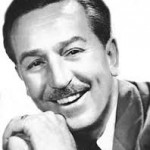
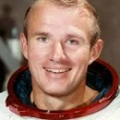

Sobre
A Ordem DeMolay é um grupo de jovens patrocinado e apoiado pela maçonaria desde 1919, que foi criado nos Estados Unidos da América por um Maçom da cidade de Kansas City chamado Frank Sherman Land.
Nossa Ordem tem por objetivo criar bons cidadãos, que respeitam as leis, que convivem em harmonia com a sociedade, que auxiliam o próximo em suas necessidades básicas e educacionais e que, por meio do exemplo, sirvam como modelo a ser seguido por todos os jovens. Ou, nas palavras do Primeiro Diácono na Cerimônia de Iniciação:
“O grande objetivo de nossa Ordem é ensinar e praticar as virtudes que nos levam a uma vida pura, reta, patriótica e reverente, como a melhor preparação para a maioridade da qual nos aproximamos. Nós procuramos, sinceramente, ser melhores filhos, melhores irmãos e melhores amigos, para que, ao chegarmos aos anos da maioridade, possamos ser melhores homens.”
O Capítulo DeMolay é responsável por conceder os Graus Iniciático e DeMolay e é a célula base de nossa Ordem. Existe também a Ordem Sagrada dos Soldados Companheiros de Jacques DeMolay, que se reúne em Priorados, que são responsáveis por conceder o Grau de Nobre Cavaleiro e do Ébano e algumas outras encenações opcionais. Além dessas duas organizações temos também a Corte de Chevalier, que é uma organização que congrega os DeMolays que receberam o Grau de Chevalier, que é a maior honraria que um membro ativo da Ordem DeMolay pode receber.
Cada uma dessas organizações congrega jovens de diferentes idades e que possuem necessidades e aspirações diferentes e você, como um membro, poderá aprender várias e preciosas lições que lhe auxiliarão na vida adulta, tais como:
- Falar em Público;
- Hierarquia e disciplina;
- Respeito às Regras;
- A importância de auxiliar a comunidade;
- Responsabilidade.
Hall da Fama
| Walt Disney
Pai do Mickey Mouse |
Vance Brand
Astronauta |
William J. Clinton
Presidente dos EUA |
Edgar D.Mitchell
Astronauta |
 |  |  |
 |
Veja mais detalhes! | Veja mais detalhes! | Veja mais detalhes! | Veja mais detalhes! |
Curiosidades
- Em 1923, apenas quatro anos após a fundação da Ordem DeMolay, o número de iniciados á passava de 65 mil
- Atualmente, está presente em 5 continentes, dentro de 26 países
- O Ir Senior DeMolay Bill Cliton, esteve no Brasil em 15 de Outubro de 1997 e recebeu os Irmãos do Rio de Janeiro
- A Ordem DeMolay foi considerada pela Organização das Nações Unidas - ONU - como organização não-governamental de importância fundamental, pois trabalha alicerçada na máxima de que "educando-se o jovem estaremos nos eximindo da tarefa de castigar o adulto"
- Depois dos Estados Unidos, Brasil é o País que a Ordem DeMolay mais cresce!